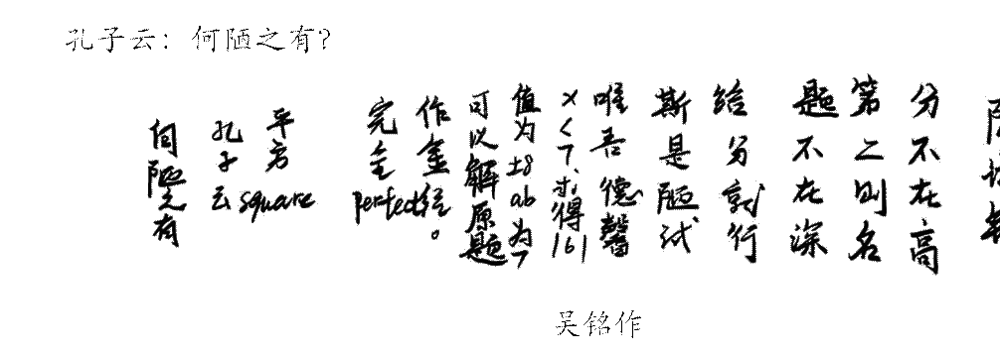
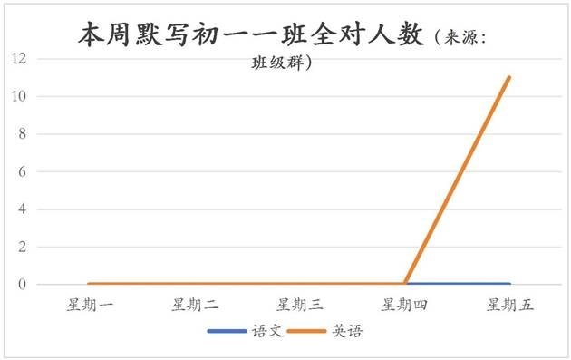
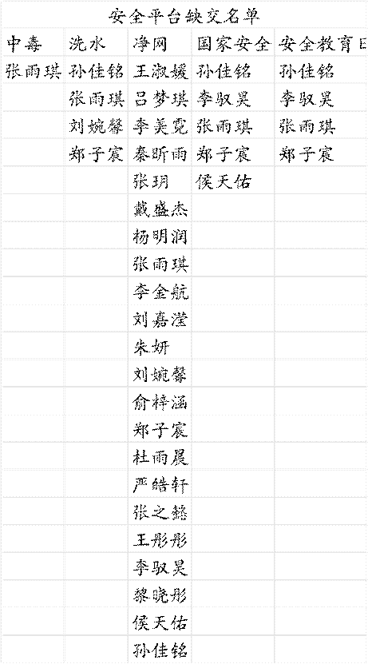

周恩来周报[1] 第七期 2025.4.15
苏州市第一初级中学校 初一（1）班 李军昊
分不在高，第二则名。题不在好，给分就行。斯是陋试，唯吾德馨。
x<7 

——致全体同学的一封科学励志信自然界的奇迹工程师在显微镜的幽蓝光晕下，草履虫这个仅 0.3 毫米的单细胞生物，正以它后端的胞肛演绎着生命的史诗。这个直径不足 2 微米的圆形小孔，每日要完成**30 次以上的排遗作业**，其效率堪比纳米级垃圾处理厂。更令人惊叹的是，胞肛周围收缩泡的协同运作，展现出比人类排污系统更精密的“自洁机制”——没有懈怠，没有堵塞，只有永恒精准的代谢律动。当我们在实验室记录草履虫每小时排出食物残渣的精确数据时，是否想过？这个没有大脑的生物，竟把排泄这样"不体面"的生理活动，变成了诠释生命尊严的仪式。它的胞肛从不因任务卑微而敷衍，正如真正的学者不会因课题微小而轻视。
微观世界里的奋斗哲学草履虫的胞肛永远遵循着
**20 秒工作周期**，这种刻在
DNA 里的时间管理，让现代职场精英都相形见绌。它不知道什么叫"拖延症"，只懂得每个瞬间都是生存的战场。
即使在实验员故意提升培养液浊度的逆境中，胞肛的收缩频率依然稳定在 **15-18 次/分钟**。这种在污染环境坚守本职的精神，恰似我们在题海中保持解题节奏的写照。
通过胞肛排出的废物，会成为其他微生物的营养源。这提醒我们：今日绞
尽脑汁解出的错题，终将化作明日思维跃迁的阶梯。

成为自己的生命工程师看着草履虫胞肛永不停歇的收缩，让我们扪心自问：
- 当这个单细胞生物都在严格执行它的" 代谢 KPI"，我们有什么理由在晨读课时昏昏欲睡？
- 当它的细胞膜能自动识别有用物质与废物，我们是否也该培养甄别知识重点的"学术胞肛"？
"题目再难，难道比草履虫在酸性环境生
存还难？"
渺小中的伟大
同学们，在这个直径不足头发丝十分之一的胞肛面前，我们见证了一个宇宙级的真理：生命从无高下之分，只有境界之别。当草履虫用它的胞肛书写单细胞生物的传奇，我们更该以笔为矛，在知识的原野上策马奔腾。
愿你们如胞肛般精准自律，似草履虫般永不言弃。待到期末考试时，且看诸位如何将这份微观世界的启迪，转化为答卷上的星辰大海！
分不在高，通透则灵；题不在多，彻悟则明。斯是陋试，惟吾求真。草稿演春秋，答卷写丹心。谈笑有鸿儒，往来无白丁。可以证几何，论古今。无喧嚣之乱耳，无功利之劳形。北大未名湖，清华荷塘月。学子云：何陋之有？最后，借用《新 陋试铭》的智慧："分不在高，通透则名；题不在多，悟透则灵。" 愿你们既能从草履虫的微观哲学中汲取力量，也能在孙佳铭的幽默警句里保持清醒。